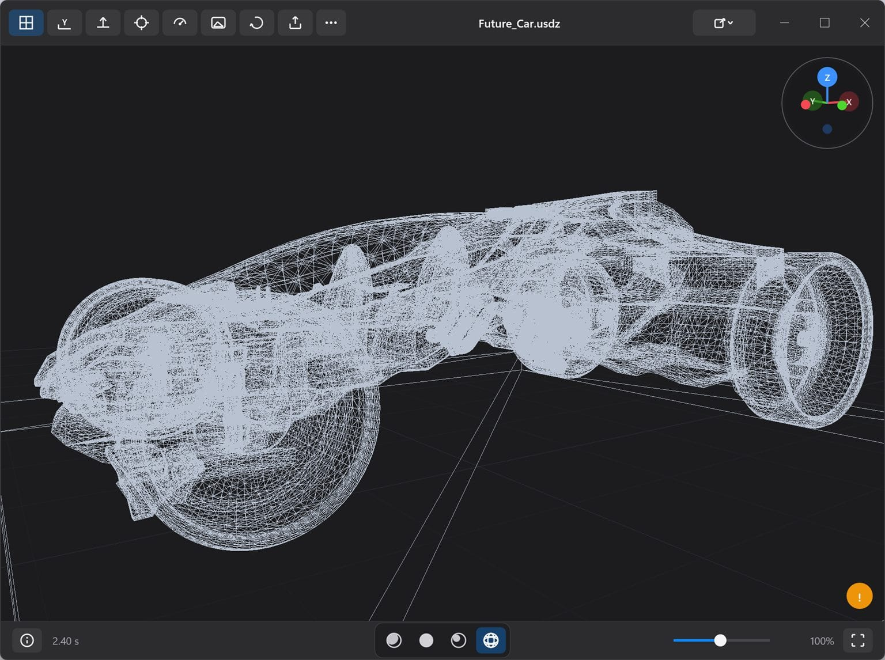
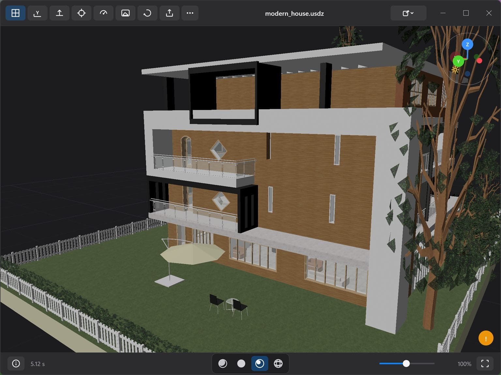

Every major format
glTF 2.0 (GLB and glTF with sidecars), OBJ with MTL, FBX, STL, PLY meshes and point clouds, 3MF, USD/USDZ and STEP.
A premium 3D viewer for Windows. View glTF, GLB, OBJ, FBX, STL, PLY, 3MF, USD and STEP.
3D & Audio · Windows
Releases are not code-signed yet, so Windows may ask for confirmation. The repository’s Windows security guide shows how to verify the checksum and open a release safely.

What’s inside
glTF 2.0 (GLB and glTF with sidecars), OBJ with MTL, FBX, STL, PLY meshes and point clouds, 3MF, USD/USDZ and STEP.
Studio, Clay and a rotatable Directional light, plus wireframe mode, an information panel and point-cloud rendering.
Drag and drop, Ctrl+O, a path on the command line, or Windows “Open with” after a one-time install.
The setup registers file associations. The portable ZIP leaves no trace — unzip, run, delete when you are done.
Loading and decoding run off the UI thread, so the window stays responsive while a heavy model comes in.
Screenshots


Getting started
Download the installer or the portable ZIP from Releases and verify the SHA-256 checksum shown on the release page.
Run the setup to register file associations, or right-click the portable ZIP, choose Properties, select Unblock, then extract it anywhere.
Double-click a supported file, drag it onto the window, press Ctrl+O, or pass a path on the command line.
Format support
| Format | What is supported |
|---|---|
| glTF 2.0 | .glb and .gltf, local binary and image sidecars, Draco and meshopt geometry, KTX2/Basis and PNG/JPEG/WebP textures |
| Wavefront OBJ | .obj with optional local .mtl and texture sidecars |
| FBX | Binary and ASCII, static hierarchy, instances, supported materials and textures, deterministic baked start pose |
| STL | ASCII and binary |
| PLY | ASCII and binary triangle meshes, plus point clouds |
| 3MF | Core geometry, components and build items, material colors and textures, production parts, bounded beam lattices |
| USD | .usd, .usda, .usdc and .usdz: static meshes, hierarchy, instances, common primvars, bounded preview-surface materials |
| STEP | .step and .stp: AP203/AP214/AP242 B-rep or authored tessellated geometry, assemblies, instance colors, authored units |
Under the hood
Preview 3D is a C++20 application built with MSVC and vcpkg-pinned dependencies. OpenUSD and OCCT run in separate compatibility hosts, and the UI never waits on the decoder.
Preview 3D FAQ
glTF 2.0 (GLB and glTF with sidecars), OBJ with MTL, FBX, STL, PLY meshes and point clouds, 3MF, USD/USDZ and STEP. The repository documents the exact subset and resource ceilings for each.
No. Files are parsed and rendered on your machine, and the parser runs in a zero-capability AppContainer worker with no network access. There is no telemetry.
Windows 10 and 11 on x64. The installer registers file associations, and a portable ZIP is available if you would rather not install anything.
Yes. The installer adds Preview 3D to Open with and Default apps for the supported extensions. Windows keeps your existing choices, so confirm the change in Default apps after installing.
Releases are not code-signed yet, so SmartScreen may prompt. Download only from the repository’s Releases page, verify the SHA-256 checksum, and follow the Windows security guide. Code signing is on the roadmap.
Yes. Open Preview3D.slnx in Visual Studio with the Desktop development with C++ workload and vcpkg integration, then build Release x64. The first restore compiles OpenUSD and OCCT from source, so expect it to take a while.
Keep browsing